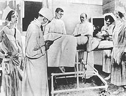
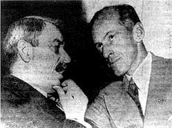

This is an archived copy of History Matters, provided by the Roy Rosenzweig Center for History and New Media. To explore this content in a new interface, visit Who Built America?.

What do these three apparently very different photographs of news events have in common?
Bolshevik leader V. I. Lenin addresses Soviet troops in Moscow in 1920 |
 Movie idol Rudolph Valentino undergoes surgery in 1926. |
|
 Earl Browder, general secretary of the American Communist Party, confers with Senator Millard E. Tydings (D. Maryland) in 1950. |
||